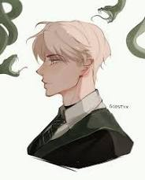

Draco Malfoy é um bruxo que estuda em Hogwarts, a escola de magia e bruxaria, e pertence à casa da Sonserina. Ele é filho de Lúcio e Narcisa Malfoy, uma família de bruxos de sangue puro, rica e muito influente no mundo mágico.
Draco é o principal rival de Harry Potter durante os anos escolares. Orgulhoso e arrogante no início da história, ele representa os preconceitos da sua família contra bruxos nascidos de pais trouxas. Com o passar dos livros, porém, o personagem se torna mais complexo, e o leitor passa a ver o medo e a pressão que ele carrega. No final, ele era apenas um menino fazendo o que lhe havia sido ensinado para se proteger e a aqueles que amava.
Draco aparece pela primeira vez em Harry Potter e a Pedra Filosofal, quando conhece Harry na loja de vestes antes do início do ano letivo. Harry recusa a amizade que Draco oferece, e a rivalidade entre os dois começa ali.
Ao longo da série, Draco se torna um antagonista constante, mas seu papel cresce em Harry Potter e o Enigma do Príncipe, quando recebe uma missão perigosa de Voldemort. Nos livros finais, fica claro que ele é um jovem preso entre as expectativas da família e as próprias dúvidas, o que o torna um dos personagens mais interessantes da obra. Para mim, ele é o melhor porque representa apenas uma criança que cresceu para mostrar o erro dos adultos, desde o de Dumbledore com Tom Riddle a até ao deixar Harry nos Dursleys e manipular sua jornada, Draco era apenas um menino que amava sua família e faria tudo por ela, quando a história é com o protagonista nos sequer levamos em conta o passado térrivel de James, seu pai e os marotos, porque bem, Harry o ama, mas com Draco, porque só vemos um vilão? Ele mesmo na sequência da saga em que é a história dos filhos deles, admite que na verdade era muito sozinho, e que desde o começo tudoo que queria era a amizade do garoto de ouro, o que aconteceu é que Harry foi influênciado desde o inicio, a primeira pessoa boa pra ele foi Hagrid e foi ele quem plantou a semente de sonserinos são maus, depois Ronald regou, e sinceramente? Se no primeiro dia de aula, eu me apresentasse a alguém que eu quero muito ser amigo e outra pessoa risse do meu nome, eu também ficaria brava, o problema era de Draco com rony, e Harry mais uma vez, foi influênciado, foi estupído, tomou as dores do outro e julgou Draco apenas por se defender, sim, foi com desprezo e arrôgancia demais? Foi, pórem esse foi o jeito que ele foi ensinado ase proteger, ele também tinha apenas one anos, e enfim Harry Potter jogou ele fora sem sequer conhecer, porque Draco usou palavras montadas na dor pela ofensa do Weasley, então, sinceramente? Há um personagem inexplorado, complexo demais, e nunca desenvolvido, é por isso, que alguns certos autores não deveriam ser considerados autores de verdade, você nâo cria algo apenas para ser dispositivo de enredo ou trampolim pro personagem, você cria e deixa crescer, cuida das raízes, deixa se tornar cheia de ramos, seja bons ou maus, não cria algo e deixa em aberto para existir na sombra e ser fertilizante, todos e quaisquer personagens são árvores, se responsabilize por eles, não tenha medo de deixar crescer, as vezes pode ser assustador dar letras a eles, porque eu seique eles simplesmente se formam sozinhos, e é sobre isso, você não pode forçar ele seguir o papel que você quer, as vezes seu personagem tem seu próprio papel, quando você faz isso, tudo sobre o que ele era antes some, e eu me refiro a um núcleo de varinha de pelo de unícornio, que eu sei bem que significa magia de luz, você vê o erro? A uma história ali, e você usou ela para o enredo, quando cada um dos seus personagens viviam seus próprios e ao tornar ela para o enredo, você não desenvolve, e nós fãs ficamos com um personagem com possibilidade demais e nenhuma resposta. Não havia nada de errado em ser Draco Malfoy, que viveu apenas do jeito que lhe foi ensinado e depois do que o mundo mostrou a ele, havia um dispositivo de enredo, e histórias de verdade... elas só fluem. Como água, para todas as direções. Ele é o meu personagem favorito porque alguém precisa saber disso, alguém precisa entender,alguém precisa estar lá,porque no fim, ele sempre esteve sozinho. E essa é a maior crueldade. Ele não é o vilão, ele é uma vitíma da própria história, a do seu mundo e a do nosso.
Quer conhecer melhor o personagem? Leia mais sobre Draco Malfoy na Wikipédia.